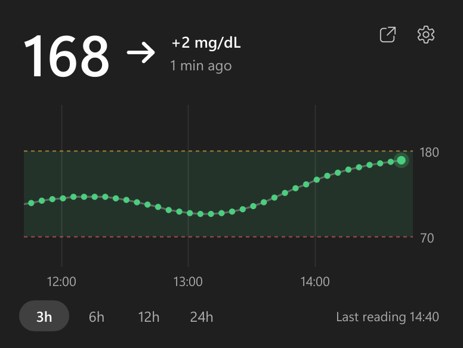
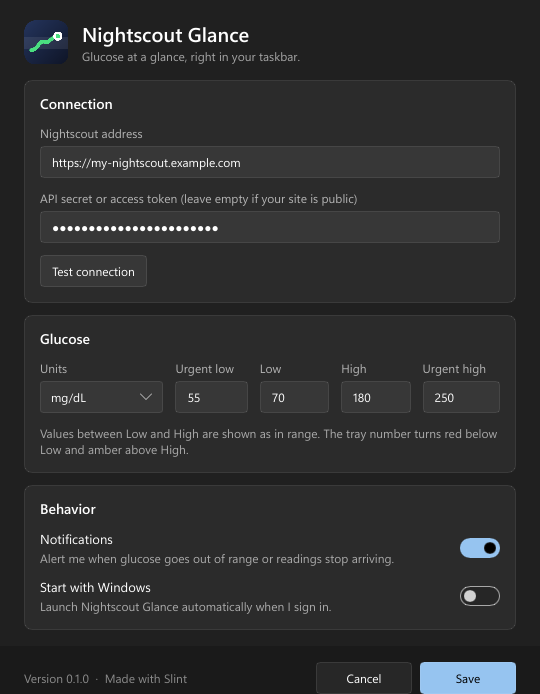

Glucose at a glance, right in your taskbar.
Nightscout Glance puts the current reading from your Nightscout site into the Windows tray as a plain number. Hover over it and the last hours appear as a graph. Made by a parent who checks it all day.
Free and open source. Windows 10 and 11. One 9 MB file, no installer.

The number is the icon
No coloured blob to decode. The tray shows the value itself, redrawn for light and dark taskbars so you can always read it.
In rangePlain taskbar text colour.
LowRed below your low threshold.
HighAmber above your high threshold.
StaleDimmed when no reading has arrived for 15 minutes.
Small on purpose
It does one job and stays out of the way.
History on hover
Value, trend arrow, change since the last reading, and a graph of the last 3, 6, 12 or 24 hours with your target range.
Alerts when it matters
A Windows notification when glucose leaves the target range or readings stop arriving. One switch turns them off.
Barely there
A single native executable using about 4 MB of private memory. It wakes up once per expected reading and sleeps the rest of the time.
mg/dL and mmol/L
Pick your unit and set your own low, high and urgent thresholds.
Private
It talks only to your Nightscout site. No account, no telemetry. Your API secret is stored encrypted by Windows.
Open source
MIT licensed and written in Rust. Read it, build it, change it.
Running in a minute
There is nothing to install.
- Download and runPut
NightscoutGlance.exeanywhere and start it. - Enter your Nightscout addressAdd an API secret or a read-only access token if your site is not public, then test the connection.
- Pin the numberWindows hides new tray icons behind the ^ arrow. Drag the number onto the taskbar so it stays in view.
